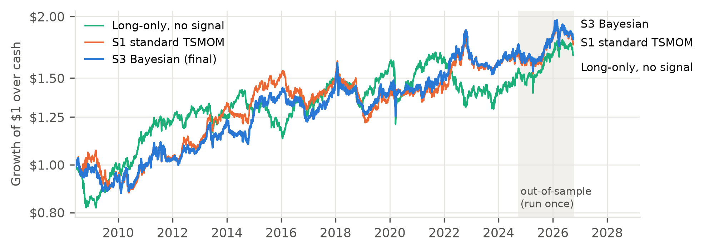
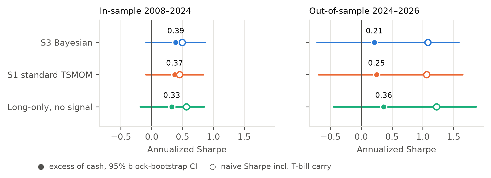
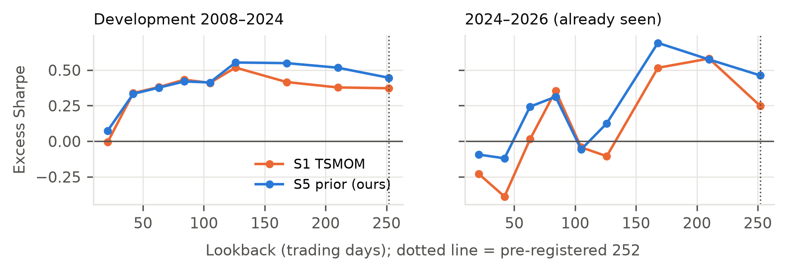

Time-series momentum (TSMOM) bets that an asset keeps moving in the direction of its past year's return. It treats a coin-flip trend of +0.1% the same as a strong one, and it ignores the most robust fact in asset pricing: assets with a risk premium drift up on average. We rebuild TSMOM as a Bayesian would. The prior is the asset's risk premium, the evidence is its trend, and the position is sized by the posterior probability that the drift is positive (S5). With no tuned parameters (the prior is fixed from theory), S5 earns an excess-of-cash Sharpe of 0.45 vs 0.37 for standard TSMOM on 23 ETFs (2008–2024). It trades less, keeps TSMOM's crash protection, and beats both TSMOM and long-only on 30 ETFs we had never touched (0.38 vs 0.18 and 0.36). It is the only strategy we tested that beats long-only in all four test sets. What is new is the combination of a Black–Litterman-style premium prior with per-asset trend evidence (§2). We reached it after 15 variants that did not work, all pre-registered in git and reported here. The edge is modest and not statistically proven; §5 says exactly how far the evidence goes.
Edge source. Investors update toward news by less than Bayes' rule implies (conservatism: Edwards 1968; Barberis, Shleifer & Vishny 1998), so part of each repricing arrives late as drift, which TSMOM harvests (Moskowitz, Ooi & Pedersen 2012). Who is on the other side: investors anchored to pre-news valuations, and hedgers and policy makers who trade gradually for reasons other than profit. Why it persists: the bias is human, and trend-following's long whipsaw drawdowns limit the capital that competes it away.
Our twist: trade like the Bayesian the market is not. A year of returns is noisy evidence about an asset's
drift (the standard error of a one-year Sharpe is about 1). A rational trader combines it with prior knowledge: equities,
bonds and real estate carry a long-run risk premium (prior Sharpe 0.3; Ilmanen 2011); commodity and currency spot
returns do not (prior 0). We give the prior the weight of one lookback window of data, so theory and evidence count
equally. The posterior is z = (m0 + ŝ) / (√2·se) and the position is the TSMOM vol-target weight × (2Φ(z) − 1).
The effect: a premium asset stays long unless its trend is clearly negative; a weak trend gets a small bet; a strong
trend gets a full one. Predictions (committed b1c8d78 before any code): S5 beats standard TSMOM (S1) on
held-out data, with lower turnover and most of TSMOM's crash protection. Fails if S5's holdout Sharpe ≤ S1's.
| Component | Prior work we build on | Our extension |
|---|---|---|
| Trend signal | TSMOM: sign of the 12-month return (Moskowitz et al. 2012) | Used as evidence with a known noise level, not as the decision |
| Trend-strength sizing | Signals scaled by trend significance (e.g. Baltas & Kosowski 2013) | Our flat-prior S3; tested, then improved on |
| Premium as a prior | Black–Litterman: equilibrium premia as the portfolio prior (1992) | Applied per asset inside TSMOM, by asset class |
| Prior strength | Black–Litterman's τ, a judgment call | Fixed by rule: one lookback window of data |
| Vol targeting | Moskowitz et al. 2012; Barroso & Santa-Clara 2015 | Unchanged |
Why this is more than a parameter tweak. S5 is a single rule that contains the two classic strategies as limits. With a very weak prior it becomes trend-strength TSMOM; with a very strong prior it becomes long-only in premium assets and flat in the rest. Prior strength is therefore one interpretable dial between "follow the trend" and "harvest the premium". We set the dial at equal weight before testing; we did not search over it. The asset-class prior also lets one rule treat assets differently for an economic reason: commodities and currencies, which have no premium, are traded on trend alone, while equities, bonds and REITs keep a long bias that only a clear downtrend overrides. To our knowledge this premium-prior formulation of TSMOM sizing is not the standard one in the literature; the methodological contribution is the test design (pre-registered rounds, new untouched holdouts after the original one was spent, and an audit that removed T-bill carry from the headline).
Development universe (fixed by rule): the most liquid US ETF per distinct exposure with inception before mid-2007:
8 equity (SPY, QQQ, IWM, EFA, EEM, EWJ, EWZ, FXI), 6 bond (SHY, IEF, TLT, LQD, HYG, TIP), 5 commodity (GLD, SLV, DBC, USO, DBA),
3 currency (UUP, FXE, FXY), 1 real estate (VNQ). Sample 2007-04 to 2024-10, signals from 2008-05. Three test sets not used
for development: (i) 2024-10 to 2026-10, held out originally but spent on Rounds 1–2, so it is reported as "already
seen"; (ii) a backcast, 2001-01 to 2007-04, the same ETFs as they launch (5 rising to 22), never loaded during
development; (iii) 30 new ETFs, never used, chosen by the same rule: 10 country funds, 9 US sector SPDRs, 4 bond
(AGG, MBB, TLH, IEI), 3 commodity (DBB, DBE, DBP), 4 currency (FXB, FXC, FXA, FXF), 2008-04 to 2026-10.
Sources: Yahoo Finance adjusted daily bars (yfinance); 3-month T-bill (FRED DTB3); Ken French factors.
We chose public data over the Webull API so that judges can reproduce results without credentials.
Data problems. Survivorship: every ETF still trades and was picked knowing it is liquid today, and we excluded UNG by name for its known roll losses, so there is hindsight in the selection. Corporate actions: adjusted prices, and USO's 1-for-8 reverse split (2020) was checked. Missing data: none after inception; pre-inception rows are excluded, never filled. Four one-day moves above 25% were verified as genuine (e.g. USO on 2020-04-21).
Timing. Signals at each month-end close; trades at the next day's open; positions drift between rebalances. Sizing family (10% portfolio vol budget split across available assets, 60-day vol, 2× equity cap per asset): S0 sign only; S1 vol-targeted sign (standard TSMOM); S2 S1 without de-risking in "information-shock" months (high vol and efficiency ratio > 0.44); S3 flat-prior Bayesian, S1 × (2Φ(t-stat) − 1); S4 S1 doubled in calm, efficient months; S5 risk-premium prior (§2). Lookbacks 63, 126 and 252 days give 18 variants, all reported. Thresholds come from theory (0.44 is twice the random-walk efficiency ratio; the prior Sharpe values come from the literature), and none was tuned. Costs: 5 bps per side (commission-free broker; half-spreads are about 1 bp for large ETFs and several bps for thin ones; open-auction slippage), with everything also run at 10 bps. Returns are in excess of cash, Σwi(ri − rf), the TSMOM-literature convention.
Process. Round 1 (S2) and Round 2 (S3, S4) were pre-registered and run in-sample; Round 3 (S5) was pre-registered with
its holdouts before any code, developed in-sample, frozen (eda886a), then evaluated once on the holdouts.
Overfitting and validity checks: Deflated Sharpe (Bailey & López de Prado 2014) with N = 18; 21-day block-bootstrap 95% CIs;
fills delayed by 1 and 4 extra days; a lookback sweep of 21–252 days; a long-only baseline (S1's weights, always long); a
matched-10%-vol comparison; a Fama-French-3 + momentum regression; mechanism tests on 4,500 asset-months; and an engine verified
on synthetic prices (zero weights give zero P&L; a single long position matches buy-and-hold; an asset earning rf shows zero excess).
| L = 252, 5 bps, over cash | Development 2008-06 → 2024-10 | 2024-10 → 2026-10 (already seen) | ||||
|---|---|---|---|---|---|---|
| S5 (ours) | S1 TSMOM | Long-only | S5 (ours) | S1 TSMOM | Long-only | |
| Excess return (ann.) | 1.16% | 1.55% | 1.62% | 1.20% | 1.10% | 1.94% |
| Volatility | 2.67% | 4.40% | 5.40% | 2.66% | 4.90% | 5.71% |
| Sharpe | 0.45 | 0.37 | 0.33 | 0.46 | 0.25 | 0.36 |
| Sharpe 95% CI | −0.02, 0.95 | −0.10, 0.84 | −0.19, 0.85 | −0.56, 1.77 | −0.69, 1.65 | −0.45, 1.86 |
| Sharpe at 10 bps | 0.40 | 0.31 | — | 0.41 | 0.21 | — |
| Max drawdown | −7.0% | −11.8% | −14.7% | −2.8% | −4.7% | −5.6% |
| Turnover (×/yr) | 2.7 | 5.1 | 2.1 | 2.5 | 3.9 | 1.9 |
| Worst month | −2.1% | −3.4% | −5.8% | −1.9% | −3.2% | −2.6% |
| Skew (daily) | −0.76 | −0.42 | −0.95 | −0.63 | −0.41 | −0.13 |


| Sharpe, L = 252, 5 bps | S5 prior | S1 TSMOM | S3 flat prior | Long-only | S5 − S1 [95% CI] | Pre-registered test |
|---|---|---|---|---|---|---|
| Development | 0.45 | 0.37 | 0.39 | 0.33 | +0.07 [−0.13, 0.29] | (in-sample) |
| 2024–26, already seen | 0.46 | 0.25 | 0.21 | 0.36 | +0.21 [−0.24, 0.58] | (not a holdout) |
| Holdout: backcast | 0.71 | 0.73 | 0.62 | 0.37 | −0.02 [−0.38, 0.44] | fail (narrow) |
| Holdout: 30 new ETFs | 0.38 | 0.18 | 0.28 | 0.36 | +0.20 [−0.01, 0.40] | pass |
| Development Sharpe, 5 bps | S0 sign | S1 TSMOM | S2 shock (R1) | S3 flat (R2) | S4 calm (R2) | S5 prior (R3) |
|---|---|---|---|---|---|---|
| 63 days | 0.18 | 0.38 | 0.38 | 0.35 | 0.39 | 0.38 |
| 126 days | 0.31 | 0.52 | 0.52 | 0.54 | 0.53 | 0.55 |
| 252 days (pre-reg.) | 0.06 | 0.37 | 0.37 | 0.39 | 0.37 | 0.45 |
What survives. The prior improved the flat Bayesian (S5 > S3) in 9 of 9 lookback-by-test-set comparisons. Extra fill delay degrades S5 smoothly (0.45 → 0.42 → 0.41: no lookahead). S5 ≥ S1 across 105–252-day lookbacks (Figure 3). It beats S1 by more at 10 bps (+0.08). And it keeps the crash profile (excess return, S5 / S1 / long-only): GFC 2008-09 to 2009-03 −0.5% / +2.4% vs −5.9%; COVID crash −3.1% / −2.3% vs −12.8%; 2022 +3.6% / +9.9% vs −11.0%. It also loses less in the 2009 rebound (−1.8% vs S1 −5.2%).

Built in: per-asset vol targeting (10% budget / N), a 2× equity cap per asset, 23 assets across 5 classes, monthly rebalancing, and posterior scaling that shrinks bets on uncertain trends (average gross 0.69×, maximum 1.98×; average net 0.41×). Observed (development): daily 99% VaR −0.51%, CVaR −0.72%, worst day −1.30% (2018-02-05), longest drawdown 1,033 trading days. Weakness found: vol targeting levers low-vol bonds; SHY reached 153% of equity and the bond sleeve 178% gross, so a rate shock is the concentrated risk. Rules for live trading (set in advance and deliberately not backtested, to avoid a 19th trial): (1) a gross cap of 100% of equity per asset class and 2.5× in total; (2) if drawdown exceeds 2× the target annual vol, halve the target until half the loss is recovered; (3) monitor 1-year market β and cut the equity sleeve if β > 0.3; (4) retire the strategy if its 3-year excess Sharpe is < 0 and drawdown exceeds the backtest maximum (−7.0%). Tail: negative skew and V-shaped reversals (2009, March 2020) are the known failure mode; we do not hedge them.
Monthly trades in ETFs whose 2024 median daily dollar volume ranges from about $10M (FXY) to billions (SPY, HYG, LQD). Cost per trade = 5 bps + square-root impact σdaily·√(trade $ / ADV $), using the trailing 20-day ADV known before the trade. S5's development Sharpe (0.51 before costs) is 0.44 at $1M, 0.40 at $100M, 0.29 at $1B and ≈ −0.05 at $10B; over 2024–26 it is 0.41 at $100M. S5 trades less than S1 (2.7× vs 5.1× a year at its own risk level), so it degrades more slowly. At $1B the median trade is 1.1% of ADV, but the largest trades in thin names (HYG at $3.6M per day in 2008; FXY, DBC and UUP at $10–22M today) exceed daily volume from about $100M and would need splitting across days. Practical capacity: about $100M–$500M, set by the currency and commodity ETFs. Adjusted prices understate early dollar volume, and ETF creation/redemption adds liquidity our ADV measure misses, so both biases make this estimate conservative.
Bailey, D. & López de Prado, M. (2014). The Deflated Sharpe Ratio. Journal of Portfolio Management 40(5).
Barberis, N., Shleifer, A. & Vishny, R. (1998). A Model of Investor Sentiment. Journal of Financial Economics 49(3).
Baltas, A.-N. & Kosowski, R. (2013). Momentum Strategies in Futures Markets and Trend-Following Funds. Working paper, SSRN.
Barroso, P. & Santa-Clara, P. (2015). Momentum Has Its Moments. Journal of Financial Economics 116(1).
Black, F. & Litterman, R. (1992). Global Portfolio Optimization. Financial Analysts Journal 48(5).
Daniel, K. & Moskowitz, T. (2016). Momentum Crashes. Journal of Financial Economics 122(2).
Edwards, W. (1968). Conservatism in Human Information Processing. In Formal Representation of Human Judgment, Wiley.
Harvey, C., Liu, Y. & Zhu, H. (2016). …and the Cross-Section of Expected Returns. Review of Financial Studies 29(1).
Hong, H. & Stein, J. (1999). A Unified Theory of Underreaction, Momentum Trading, and Overreaction. Journal of Finance 54(6).
Hurst, B., Ooi, Y. H. & Pedersen, L. (2017). A Century of Evidence on Trend-Following Investing. Journal of Portfolio Management 44(1).
Ilmanen, A. (2011). Expected Returns: An Investor's Guide to Harvesting Market Rewards. Wiley.
Kaufman, P. (1995). Smarter Trading. McGraw-Hill (efficiency ratio).
Künsch, H. (1989). The Jackknife and the Bootstrap for General Stationary Observations. Annals of Statistics 17(3).
Moreira, A. & Muir, T. (2017). Volatility-Managed Portfolios. Journal of Finance 72(4).
Moskowitz, T., Ooi, Y. H. & Pedersen, L. (2012). Time Series Momentum. Journal of Financial Economics 104(2).
Data: Yahoo Finance (via the yfinance package); Kenneth R. French Data Library (F-F Research Factors and Momentum, daily);
Federal Reserve Bank of St. Louis, FRED series DTB3. Software: Python, pandas, NumPy, SciPy, statsmodels, matplotlib. AI tools were used
for coding assistance; the team reviewed and is responsible for all code and claims.
Every hypothesis, decision and result is timestamped in the repository: HYPOTHESIS.md (pre-registrations), DECISIONS.md,
and VARIANTS.md (every trial, including failures). Order on 2026-10-03 (ET): hypothesis 13:44 → data 13:50 → engine, verified on synthetic data, 14:01 →
Round 1 14:01 → Round 2 pre-registered 20:26, run 20:27 → freeze, 2024–26 evaluated 20:36–20:37 → cash-carry audit 20:50 → Round 3 and its holdouts
pre-registered (b1c8d78) → code → development run → freeze (eda886a) → holdouts evaluated once (deb4881).
| Holdout excess Sharpe, 5 bps | S1 63d | S1 126d | S1 252d | S3 63d | S3 126d | S3 252d | S5 63d | S5 126d | S5 252d |
|---|---|---|---|---|---|---|---|---|---|
| Backcast 2001–2007 | 0.50 | 0.36 | 0.73 | 0.44 | 0.33 | 0.62 | 0.50 | 0.38 | 0.71 |
| 30 new ETFs 2008–2026 | 0.25 | 0.21 | 0.18 | 0.16 | 0.28 | 0.28 | 0.22 | 0.34 | 0.38 |
| 2024–26 (seen) Sharpe, 5 bps | S0 | S1 | S2 | S3 | S4 | S5 |
|---|---|---|---|---|---|---|
| 63 days | 0.35 | 0.01 | 0.03 | 0.08 | −0.10 | 0.24 |
| 126 days | 0.29 | −0.11 | −0.11 | −0.04 | −0.12 | 0.13 |
| 252 days | 0.84 | 0.25 | 0.26 | 0.21 | 0.17 | 0.46 |
S0 at 252 days had the best 2024–26 result (0.84) and the worst development result (0.06), a reminder of how noisy a 2-year window is.